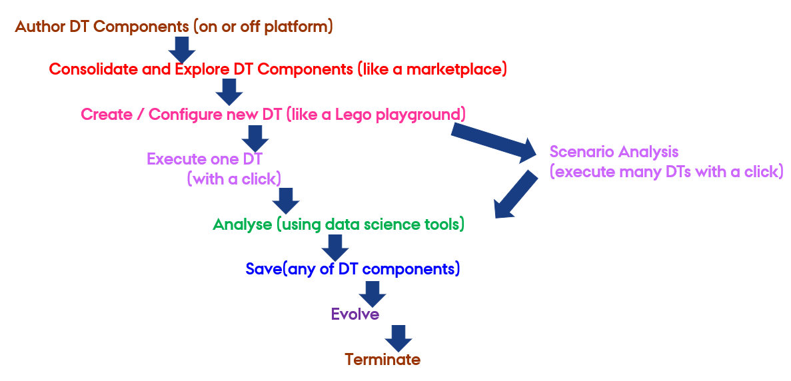

GitLab CI/CD Infrastructure
Given that files in the Library are stored in a Git repository, the approach employed was that of GitLab's parent-child pipelines. In this context, a parent pipeline initiates the execution of another pipeline within the same project, the latter of which is known as the child pipeline. More about pipelines can be found in GitLab's documentation on CI/CD Pipelines.
CI/CD Pipelines
Continuous Integration (CI) and Continuous Deployment (CD) represent two key components of the DevOps methodology.
CI involves frequent integration of code changes into a common repository. Each integration triggers automated builds and tests that permit the detection of issues at an early stage. This practice ensures that the changes made to the code are checked fast enough, reducing the possibilities of integration problems and hence ensuring high-quality software.
CD automates the process of release, ensuring that code changes are automatically tested and prepared for deployment. Teams using CD can deploy updates rapidly and reliably, improving the responsiveness and quality of software. Performed together, CI/CD automates the whole delivery pipeline for software, increasing efficiency and reducing errors. They entirely eliminate, or significantly reduce, the manual human input required for a code change to be moved from a commit to a production environment. The entire process of compilation, testing (including unit, integration, and regression testing), deployment, and infrastructure provisioning is included.
CI/CD practices are explained in more detail in this article by GitLab.
A CI/CD pipeline is a series of automated processes that manage CI and CD of software. They are configured to run automatically, with no need for manual intervention once activated.
GitLab is a single application for the entire DevOps lifecycle, which means it performs all of the basics required for CI/CD in one environment. The documentation provided by GitLab was instrumental in enabling a comprehensive understanding of the CI/CD pipelines.
Pipelines are composed of a number of essential components. Jobs delineate the specific tasks to be accomplished, while stages define the sequence in which jobs are executed. In this way, stages ensure that each step takes place in the right order and make the pipeline more efficient and consistent. In the event that all jobs within a stage are successfully completed, the pipeline will automatically proceed to the subsequent stage. However, if any of the jobs fail, the flow is interrupted without proceeding.
When a pipeline is initiated, the jobs that have been defined within it are then distributed among the available runners.
GitLab runners are agents within the GitLab Runner application that execute the jobs in accordance with their configuration and the available resources. They can be configured to operate on a variety of platforms, including virtual machines, containers, and physical servers. They can also be managed locally or in a cloud environment.
We use this GitLab parent-child pipeline setup to trigger execution of digital twins stored in a user's GitLab repository.
Note
The recommended practice is to modified these pipelines via the Digital Twins Preview Page.
Parent Pipeline
The parent pipeline was configured as a top-level element. There is a single
stage called triggers, which is responsible for triggering other child
pipelines.
In the .gitlab-ci.yml file, triggers are managed for DTs inside the user
repository. Each trigger is connected with one distinct DT and becomes active
when the corresponding value of the DTName variable is provided by the API
call. The RunnerTag variable is used to specify a custom runner tag that will
execute each job in the DT's pipeline.
Below is an explanation of the keywords used in the CI/CD pipeline configuration:
- Image: Specifies the Docker image, such as
fedora:41, providing the environment for the pipeline execution. - Stages: Defines phases in the pipeline, such as triggers, organizing tasks sequentially.
- Trigger: Initiates another pipeline or job, incorporating configurations from an external file.
- Include: Imports configurations from another file for modular pipeline setups.
- Rules: Sets conditions for job execution based on variables or states.
- If: A condition within rules specifying when a job should run based on the value of a variable.
- When: Specifies the timing of job execution, such as
always. - Variables: Defines dynamic variables, like
RunnerTag, used in the pipeline.
Here is an example of such a YAML file that registers a trigger for a DT named
mass-spring-damper:
Digital Twin Structure
The digital_twins folder contains DTs that have been pre-built by one or
more users. The intention is that they should be sufficiently flexible to be
reconfigured as required for specific use cases.
Let us look at an example of such a configuration. The
dtaas/user1 repository on gitlab.com contains
the digital_twins directory with a hello_world example. Its file structure
looks like this:
The lifecycle directory here contains four files - clean, create,
execute and terminate, which are simple
BASH scripts. These correspond to stages
in a digital twin's lifecycle.

Child Pipelines
To automate the lifecycle of DT, a child pipeline has been incorporated into its corresponding folder. Regardless of the image provided in the parent pipeline, each child pipeline will use its own specified image specified in its YAML configuration or Ruby's default image.
The following are the explanations of the keywords used within the CI/CD child pipeline based on GitLab's CI/CD YAML syntax reference:
StageIt defines the steps that happen in a pipeline sequentially, for example, create, execute and clean, to make sure that tasks occur in a specific order.ScriptIt lists commands to be run at each step; for example, changing directories, modifying permissions, or running lifecycle scripts.TagsIt specifies which runner should run the jobs, thereby providing an additional control over where and how the jobs are run.
With the DT mass-spring-damper serving as a point of reference,
the stages in question are designed to facilitate the creation, execution, and
termination of the DT simulation, as well as the cleaning and restoration of the
environment to ensure its readiness for future executions. Here is an example of
a configuration that defines create, execute and clean as part of the
child pipeline:
Ref: Vanessa Scherma, Design and implementation of an integrated DevOps framework for Digital Twins as a Service software platform, Master's Degree Thesis, Politecnico Di Torino, 2024.